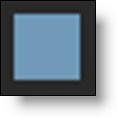
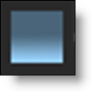
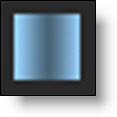
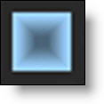

Depth
Description
The Depth node contains a dedicated toolset for creating depth channels.
All of the tools from Silhouette’s Roto node are included in the Depth node along with additional shape, gradient and depth tools.
Go to the Depth tutorials to see how it works.
Node Group
Image, Silhouette.
Depth Tools
There are a number of tools to create depth maps which include: Constant, Horizon, Ramp, Hall, Tunnel, Edges, and Alpha.
The level of depth corresponds to the shade of gray. White is nearest, black is farthest and 50% gray represents mid depth. Just select the appropriate depth tool and adjust the settings to fit the image. Several tools are provided, for instance, a tunnel module for corridor-like scenes or a horizon tool for landscapes.
Constant
Sets a constant depth for the entire frame. It is useful for setting the depth of objects that are completely flat. After selecting the Constant icon, click on the screen to create the object.
Go to the Constant tutorial to see how it works.
Depth
Sets the depth value. A value of 1 is nearest (white), 0 is farthest (black) and .5 is a mid depth (50% gray). The depth can be set interactively by Ctrl/Cmd-vertical dragging on the image in the Viewer.
Horizon
Creates a horizon line. After selecting the Horizon icon, click on the screen to create the object.
Go to the Horizon tutorial to see how it works.
Position
Sets the position of the horizon. The position can be set interactively by dragging the center point.
Rotate
Rotates the horizon. The rotation can be set interactively by dragging the solid line.
Size
Sets the size of the horizon. The size can be set interactively by dragging the dashed line.
Near/Far Depth
Sets the near and far depth. A value of 1 is nearest (white), 0 is farthest (black) and .5 is a mid depth (50% gray). The depth can be set interactively by:
• Near Depth: Ctrl/Cmd-vertical dragging on the dashed line.
• Far Depth: Ctrl/Cmd-vertical dragging on the solid line.
Note: Ctrl/Cmd-Shift dragging modifies all depth values at once.
Ramp
Creates a horizontal or vertical ramp blending out from the center. After selecting the Ramp icon, click on the screen to create the object.
Go to the Ramp tutorial to see how it works.
Position
Sets the position of the ramp. The position can be set interactively by dragging the center point.
Rotate
Rotates the ramp. The rotation can be set interactively by dragging the solid line.
Left/Right Size
Sets the left and right size. The size can be set interactively by dragging the dashed lines.
Center/Left/Right Depth
A value of 1 is nearest (white), 0 is farthest (black) and .5 is a mid depth (50% gray). The depth can be set interactively by:
• Center Depth: Ctrl/Cmd-vertical dragging on the solid line.
• Left Depth: Ctrl/Cmd-vertical dragging on the left dashed line.
• Right Depth: Ctrl/Cmd-vertical dragging on the right dashed line.
Note: Ctrl/Cmd-Shift dragging modifies all depth values at once.
Hall
Creates a perspective gradient as if you are looking down a hallway. After selecting the Hall icon, click on the screen to create the object.
Go to the Hall tutorial to see how it works.
Position
Sets the position of the ramp. The position can be set interactively by dragging the center point.
Rotate
Rotates the hall. The rotation can be set interactively by dragging the corner of one of the squares.
Offset
Offsets the outer square from the center position. The Offset can be set interactively by Alt-dragging the center point or outer square.
Inner/Outer Size
Sets the inner and outer size. The size can be set interactively by dragging the inner and outer squares. Use Shift while dragging an edge to proportionately size.
Roundness
Rounds the corners of the inner square.
Inner/Outer Depth
Sets the inner and outer depth. A value of 1 is nearest (white), 0 is farthest (black) and .5 is a mid depth (50% gray).The depth can be set interactively by:
• Inner Depth: Ctrl/Cmd-vertical dragging on the inner square.
• Outer Depth: Ctrl/Cmd-vertical dragging on the outer square.
Tunnel
Creates a circular gradient as if you are looking down a tunnel. After selecting the Tunnel icon, click on the screen to create the object.
Go to the Tunnel tutorial to see how it works.
Position
Sets the position of the tunnel. The position can be set interactively by dragging the center point.
Offset
Offsets the outer circle from the center position. The Offset can be set interactively by Alt-dragging the center point or outer circle.
Inner/Outer Size
Sets the inner and outer size. The size can be set interactively by dragging the inner and outer circles.
Aspect Ratio
Sets the aspect ratio of the tunnel.The aspect ratio can be set interactively by dragging the point at the bottom of the outer circle.
Inner/Outer Depth
Sets the inner and outer depth. A value of 1 is nearest (white), 0 is farthest (black) and .5 is a mid depth (50% gray). The depth can be set interactively by:
• Inner Depth: Ctrl/Cmd-vertical dragging on the inner circle.
• Outer Depth: Ctrl/Cmd-vertical dragging on the outer circle.
Note: Ctrl/Cmd-Shift dragging modifies all depth values at once.
Edges
Runs an edge detection and objects with edges or a lot of structure are placed in front. After selecting the Edges icon, click on the screen to create the object.
Go to the Edges tutorial to see how it works.
Invert
Inverts the depth channel.
Amount
Sets the edge brightness.
Threshold
Limits the amount of edges that are detected.
Depth
Sets the base depth. A value of 1 is nearest (white), 0 is farthest (black) and .5 is a mid depth (50% gray).
Alpha
Converts the alpha channel hooked into the Depth node’s alpha inputs into a depth map. After selecting the Alpha icon, click on the screen to create the object.

In the above example, Power Matte was used with open shapes placed far apart which generates an organic looking gradient with edge detail.
Go to the Alpha tutorial to see how it works.
Source
Sets the node input source for the Alpha tool. You can choose from Input and Alpha 1-5.
Depth Type
Sets the depth type.
Constant
Sets a constant depth.
Linear
Creates a linear gradient with two depth values.
Radial
Creates a radial depth gradient.
Ramp
Creates a linear gradient with three depth values.
Depth Parameters
Sets the depth. A value of 1 is nearest (white), 0 is farthest (black) and .5 is a mid depth (50% gray). The depth can be set interactively by:
Constant
• Ctrl/Cmd-vertical dragging on the center point.
Linear
• Left Depth: Ctrl/Cmd-vertical dragging on the left dashed line.
• Right Depth: Ctrl/Cmd-vertical dragging on the right dashed line.
Radial
• Inner Depth: Ctrl/Cmd-vertical dragging on the center point.
• Outer Depth: Ctrl/Cmd-vertical dragging on the dashed circle.
Ramp
• Center Depth: Ctrl/Cmd-vertical dragging on the solid line.
• Left Depth: Ctrl/Cmd-vertical dragging on the left dashed line.
• Right Depth: Ctrl/Cmd-vertical dragging on the right dashed line.
Note: Ctrl/Cmd-Shift dragging modifies all depth values at once.
Position
Sets the position of the gradient. The position can be set interactively by dragging the center point.
Rotate
Sets the angle of the gradient. The angle can be set interactively by dragging the solid line for Linear/Ramp and Alt-dragging the point at the bottom of the circle for Radial.
Size
Sets the size of the Radial gradient. The size can be set interactively by dragging the dashed line.
Left/Right Size
Sets the left and right size of Linear and Ramp. The size can be set interactively by dragging the dashed lines. Shift-dragging over one of the dashed lines will drag them both.
Aspect Ratio
Sets the aspect ratio of the Radial gradient. The aspect ratio can be set interactively by dragging the point at the bottom of the circle.
Blur
Blurs the depth map.
Wrap
Blurs the depth map inward without completely losing the edge.
Shapes / Layers and Depth
In addition to the same shape/layer parameters in the Roto node, there are a number of shape/layer depth controls in the Depth node.
Shape Depth Parameters
Type
Sets the shape’s depth type.
Constant
Sets a constant depth for the entire shape.
Linear
The shape is filled with a linear gradient with two depth values.
Radial
The shape is filled with a radial depth gradient.
Ramp
The shape is filled with a linear gradient with three depth values.
Depth Parameters
Sets the depth. A value of 1 is nearest (white), 0 is farthest (black) and .5 is a mid depth (50% gray). The depth can be set interactively by:
Constant
• Ctrl/Cmd-vertical dragging on the center point.
Linear
• Left Depth: Ctrl/Cmd-vertical dragging on the left dashed line.
• Right Depth: Ctrl/Cmd-vertical dragging on the right dashed line.
Radial
• Inner Depth: Ctrl/Cmd-vertical dragging on the center point.
• Outer Depth: Ctrl/Cmd-vertical dragging on the dashed circle.
Ramp
• Center Depth: Ctrl/Cmd-vertical dragging on the solid line.
• Left Depth: Ctrl/Cmd-vertical dragging on the left dashed line.
• Right Depth: Ctrl/Cmd-vertical dragging on the right dashed line.
Note: Ctrl/Cmd-Shift dragging modifies all depth values at once.
Position
Sets the position of the gradient. The position can be set interactively by dragging the center point.
Rotate
Sets the angle of the gradient. The angle can be set interactively by dragging the solid line for Linear/Ramp and Alt-dragging the point at the bottom of the circle for Radial.
Size
Sets the size of the Radial gradient. The size can be set interactively by dragging the dashed line.
Left/Right Size
Sets the left and right size of Linear and Ramp. The size can be set interactively by dragging the dashed lines. Shift-dragging over one of the dashed lines will drag them both.
Aspect Ratio
Sets the aspect ratio of the Radial gradient. The aspect ratio can be set interactively by dragging the point at the bottom of the circle.
Blur
Blurs the shape.
Wrap
Blurs the shape inward without completely losing the edge.
Layer Depth Parameters
Obey Alpha
With Obey Alpha enabled, a depth map is only created within areas of the layer’s alpha channel.
Near Depth
Sets the Near Depth for all objects in the layer.
Far Depth
Sets the Far Depth for all objects in the layer.
Common Parameters
All of the editable parameters can be adjusted in the Object Parameters. The parameters listed below are common to many of the objects.
Invert
Inverts the values. The default is off.
Blend Mode
Controls how objects are blended together in the depth map.
Normal
Places the shape/layer over any objects below it.
Note: Normal is only available for shapes and layers.
Min
Looks at the luminance information for each object and selects the value—whichever is darker—as the result. Lighter pixels are replaced while darker pixels do not change.
Max
Looks at the luminance information for each object and selects the value—whichever is brighter—as the result. Darker pixels are replaced while brighter pixels do not change.
Multiply
Produces a result where there is a union of pixels from two objects.
Screen
Looks at each object’s luminance information and multiplies the inverse of the two images. This looks kind of like an Add blend mode, but highlights are retained.
Motion Blur
Motion blur is the directional blurring of rapidly moving shapes. This parameter turns Motion Blur on or off for the selected object. The default is off.
Note: The Motion Blur parameters will not affect a shape unless Motion Blur is also enabled in the Node parameters. See Motion Blur in the Roto node for more information.
Outline Color
Sets the color of the object’s outline or on-screen controls. Left-clicking the color pot opens a standard color picker while right-clicking on the color pot opens a pop-up color menu with 16 primaries.
Reset All
Resets all parameters to their default state.
Depth Preview
The Depth Preview window displays a 3D view of the depth map and is located in a tab shared with the Sources window. It is very useful for visualizing the depth and placement of objects in 3D space.
Clicking and dragging will move the image around in a perspective view.
Note: OpenGL 3.0 is a required graphics card feature for the Depth Preview window to be available.
Depth Preview Pan/Zoom Shortcuts
Shortcut | Action |
|---|---|
Click and drag | Rotates the image a perspective view |
Scroll wheel | Zooms the image in and out |
Shift-Middle-mouse drag | Zooms the image in and out |
Space Bar-Shift-move mouse up/down | Zooms the image in and out |
Space Bar-move mouse | Pans the image |
Middle-mouse drag | Pans the image |
Middle-mouse double click | Fits the image in the Viewer |
Node Parameters
When the Depth node is being edited in the Trees window, parameters specific to the Depth node can be adjusted in the Node parameters.
Motion Blur
Motion blur is the directional blurring of rapidly moving shapes. Enables Motion Blur for the Depth node.
Go to the Motion Blur tutorial to see how it works.
Near Depth
Sets the Near Depth for all objects in the node.
Far Depth
Sets the Far Depth for all objects in the node.
Render to Alpha
Renders the depth channel to the alpha channel.
Antialias
Controls whether depth shapes are antialiased on their edges.
Node Outputs
Output
Outputs the result of the Depth node.
Objects
Outputs tracked layers and shapes for use in nodes with Data inputs.